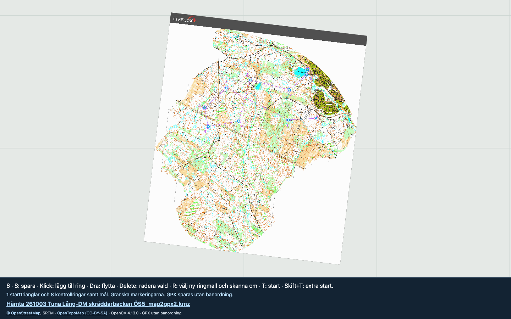

Prepare your next orienteering run
Map2GPX
Georeference a map, detect its printed control rings and export KMZ + GPX. Open a Livelox KMZ or a JPG/PNG and follow the instructions along the bottom of the map.
No installation required. Image processing runs locally in your browser. Only the HTML file is needed for local use; internet is needed for the background map and place search.

How to use it
- Open a map. Click the welcome screen or press O. Choose a calibrated KMZ or a JPG/PNG with a printed course.
- Georeference an image. Click a recognizable point in the image, then the same place in OpenTopoMap. G searches for a place; Tab switches views. Drag a blue corner to adjust scale and rotation, check alignment in several places, then press S to download …_map.kmz. KMZ maps keep their existing calibration.
- Mark the start. Click in the centre of its triangle.
- Sample a control ring. Click its centre. Zoom in until the colour is clearly visible, then click in the middle of the coloured ring stroke where the map background is white. Scanning starts automatically.
- Review and save. Add missing points with a click, drag to move, or select and delete incorrect points. Press S and unzip the download to get the KMZ and GPX files.
GPX is always unordered: independent waypoints, with no route or track. Several start triangles can be detected. Review the results before using them.
Useful shortcuts
F11 full screen (Mac may require Fn, or use the browser View menu) · F fit map · +/− zoom · R choose a new ring sample and rescan · T reselect start · Shift+T add a start · Cmd+Z/Ctrl+Z undo · H help.
Start Map2GPX
Click Open the program above to use it online. Or click Download the HTML file, then double-click the downloaded map2gpx.html to open it in Safari or Chrome. Press O to open your map, S to save and H for help. No installation is required.
Orienteering training run
Use the app EasyTrails and download the .gpx file to get a beep when you are close to any controls (in any order).
Unzip the Map2GPX download, transfer _course.gpx to your iPhone, import it in EasyTrails as waypoints and enable waypoint proximity alarms. See the EasyTrails features for waypoint import and proximity alarms.
På svenska
Öppna kartan med O och följ statusraden. Förankra vid behov kartbilden mot OpenTopoMap, justera med hörnen och spara med S. Klicka i starttriangelns centrum, sedan i en kontrollrings centrum. Zooma in och klicka mitt i ringkantens färgade linje där kartbakgrunden är vit. Granska skanningen och spara. ZIP-filen innehåller KMZ och GPX, alltid utan banordning.